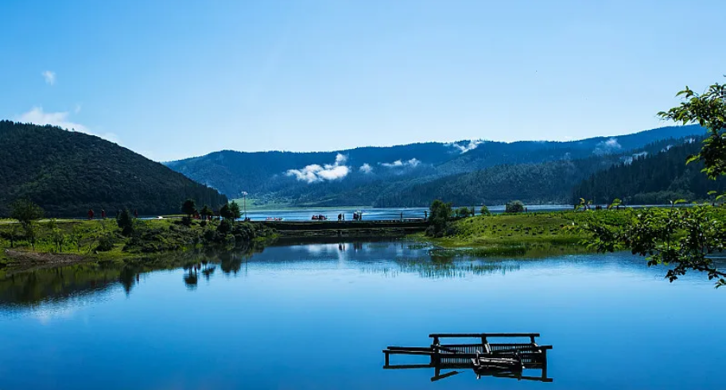
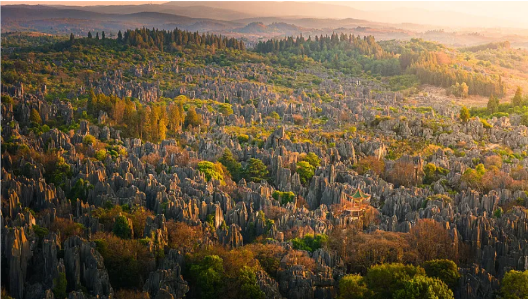

泼水节、火把节、目瑙纵歌节……少数民族节庆精彩纷呈。
过桥米线、鲜花饼、汽锅鸡、野生菌……舌尖上的云南。
昆明-大理-丽江-香格里拉经典环线，或深度西双版纳。
紫外线强烈，SPF50+防晒必备，热带地区注意蚊虫。
北半球最南的雪山，有现代冰川，纳西族心中的神山。

世界自然遗产"三江并流"核心区，高山湖泊、草甸、森林。
高原淡水湖，摩梭人"母系社会"和"走婚"文化所在地。

世界自然遗产，喀斯特地貌精华，鬼斧神工的石头森林。
中国唯一热带雨林自然保护区，生物多样性丰富。
世界文化遗产，纳西族文化中心，保存完好的少数民族古城。
南诏、大理国时期佛教建筑，苍山洱海间的标志性景观。
云南最大藏传佛教寺院，有"小布达拉宫"之称。
著名侨乡，马帮文化、中西合璧建筑的时光印记。